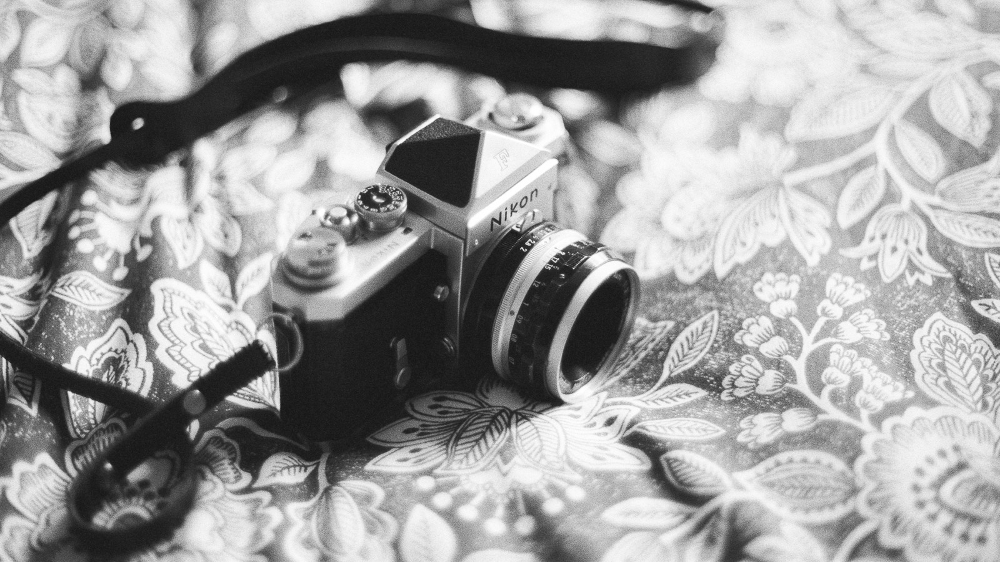
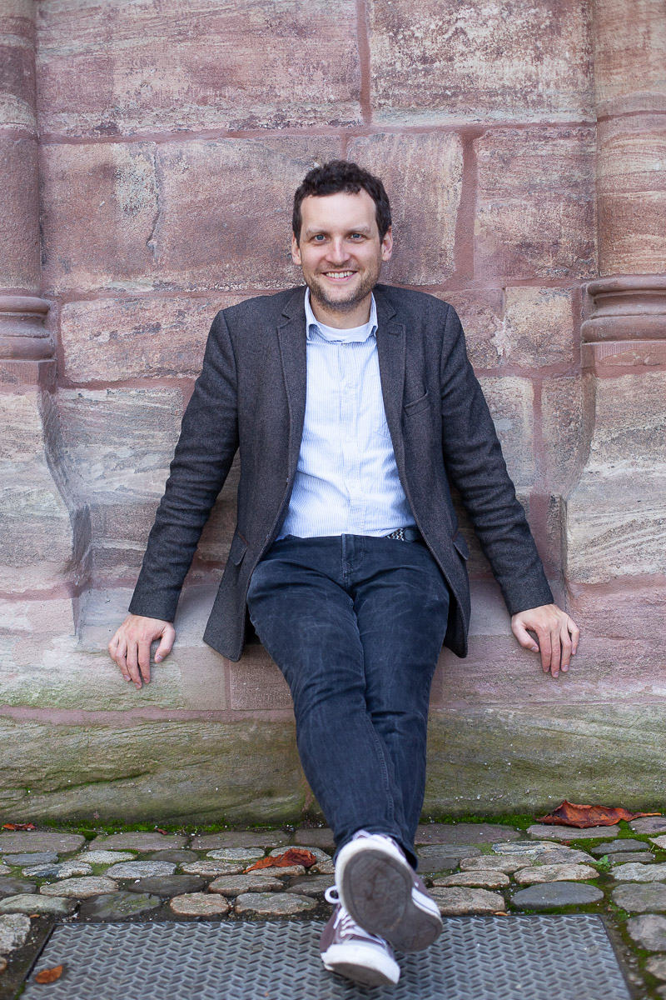

Bonjour, moi c'est Lucas !
Je suis photographe de mariages, de couples et de portraits installé près de Saverne en Alsace. J’aime photographier les liens entre les personnes : une façon de se regarder, un geste familier, un moment partagé dont on sera heureux de retrouver la trace quelques années plus tard.

La photographie, au fil des rencontres
J’ai découvert la photographie il y a plus de dix ans auprès de Leslie Maron, une photographe de mariage américaine qui m’en a transmis les bases artistiques et techniques.
Depuis, mon appareil m’a accompagné dans mes voyages, mes rencontres et les différentes étapes de ma vie. Il m’a souvent donné l’occasion de faire connaissance avec des personnes que je n’aurais peut-être jamais rencontrées autrement. Il m’a aussi appris à regarder avec davantage d’attention le monde qui m’entoure.
Avec les années, mes propres photographies ont pris une importance que je ne mesurais pas toujours au moment de les réaliser. J’y retrouve des visages, des lieux, des moments de vie. Cette expérience nourrit aujourd’hui le soin que j’apporte aux images que je réalise pour vous.
Prendre le temps de faire connaissance
Être photographié n’est pas toujours une habitude et je le comprends très bien. C'est pourquoi avant un mariage ou une séance, j’aime prendre le temps d’échanger avec vous, de comprendre ce qui vous rassemble et ce que vous souhaitez garder de ce moment.
Lors d’une séance de couple, cela peut commencer par une promenade et une conversation. Peu à peu, l’appareil prend moins de place et les gestes deviennent plus spontanés. Je reste attentif à ce qui se passe entre vous, tout en vous accompagnant lorsque vous en avez besoin.
Lors d’un mariage, cette même attention guide mon regard : Je suis le déroulement de la journée, les personnes qui vous entourent, les moments attendus et ceux qui surviennent sans prévenir. Je cherche à écrire une histoire en images dans laquelle vous puissiez vous reconnaître.
Des photographies qui traversent les années
Il m’arrive de retrouver chez des amis une photographie que j’ai prise longtemps auparavant, dans un cadre ou en fond d’écran. Cela me touche toujours de voir qu’une image a trouvé sa place dans leur quotidien.
C’est aussi ce que je souhaite pour les vôtres : qu’elles vous accompagnent et qu’en les regardant, vous retrouviez quelque chose de ce que vous avez vécu. L’atmosphère d’une journée, la présence d’un proche, votre manière si unique d’être ensemble à cette période de votre vie.
Qu’il s’agisse d’un mariage, d’une promenade à deux ou d’un portrait, j’y apporte la même attention, avec l’envie de créer des images qui vous ressemblent et que vous aurez plaisir à retrouver.
Parlons de votre projet
Vous préparez un mariage ou vous imaginez une séance photo en Alsace ou ailleurs ? Écrivez-moi quelques mots sur votre projet. Je serai heureux d’en discuter avec vous.